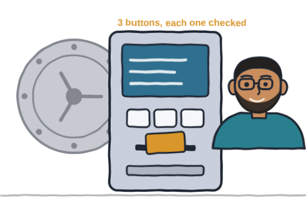
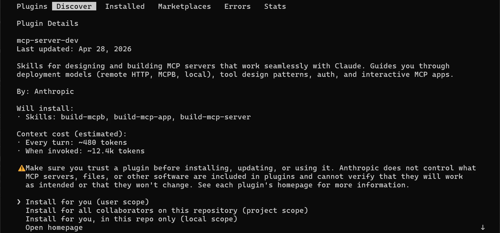
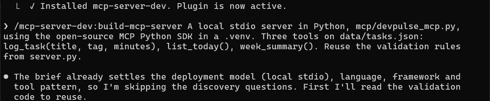
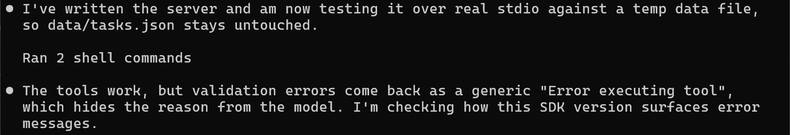
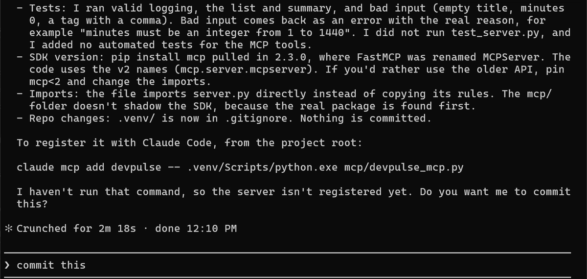
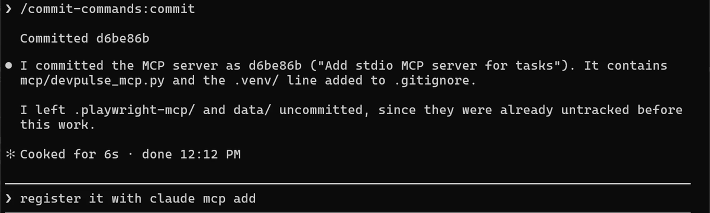
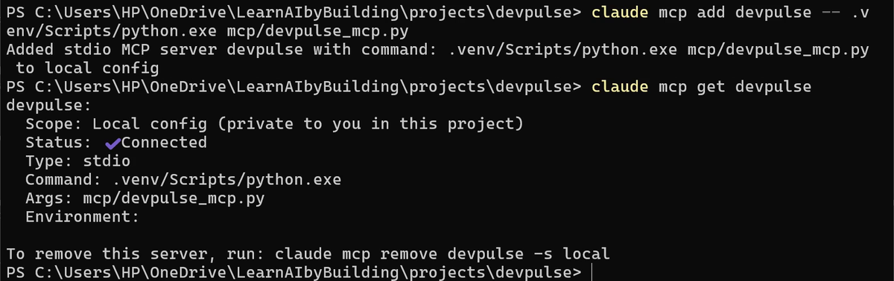
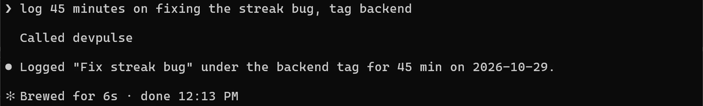
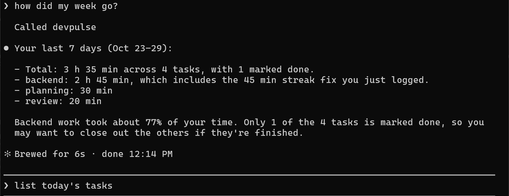

Prefer to watch? This chapter goes with Episode 11 (6:06). Open it on YouTube.
Claude still goes the long way round
You fixed a bug for 45 minutes. To log it, you open the app and fill the form. Or you ask Claude, and it edits data/tasks.json by hand.
In chapter 10, Playwright gave Claude a browser. Someone else built that server. Nobody has built one for DevPulse, so when Claude edits the data file by hand, nothing checks what it writes.
Think of your bank. You never walk into the vault and write in the ledger yourself. You use the ATM: a few clear buttons, and it checks every request before it touches your money. DevPulse's own server will be that ATM for Claude: three tools, and each one checks what it is given.

How do you give Claude tools of your own, so it can use your app directly?
A plugin that knows how to build servers
A plugin is a bundle of skills and commands. Anthropic's marketplace has one for building MCP servers.

Let the skill build the server
Tell it what you want in one go: the language, the file, and the three tools.

It made a .venv, a separate Python environment for this project, installed the MCP library (the SDK) into it with pip install mcp, wrote the file, and tested it against a temporary copy of the data. Then it caught a problem on its own.


A program normally prints its text to stdout, standard output. A stdio server uses that same channel to send its messages to Claude, in a strict format. So a stray print(), even a quick debug line, lands in the middle of those messages, and Claude can no longer read them. The server Claude wrote prints nothing. If your server needs to write notes while it runs, send them to stderr, standard error, a second channel kept apart from the messages.
Commit it with /commit-commands:commit.

Register the server
Exit Claude with /exit. The command starts the server with the Python inside .venv, so the SDK is found.

Notice the two scopes. The plugin went in at user scope, so it is yours in every project. This server is local: it lives in this project only.
Now just ask
Start claude again. No tool names this time. Talk like you would to a colleague.


week_summary. The grey list today's tasks is only a suggestion.Did it really land in the app? Refresh DevPulse (F5) and scroll to the end.
What your own tools cost
Each tool's name and description go into Claude's context, like any server's. Three small tools cost little. Keep them few and clearly named.
So far, Claude has done one job at a time. In chapter 12, we hand it a bigger job, a bug check of four files at once, and let it split the work. Claude Code calls this a workflow.
Quick reference
The prompts from this chapter, ready to copy: every prompt, chapter 11.
| Command or key | What it does | Use it when |
|---|---|---|
/plugin install name@claude-plugins-official | Installs a plugin from Anthropic's marketplace | You want ready-made skills for a job |
/mcp-server-dev:build-mcp-server … | Plans, writes and tests an MCP server | You want Claude to use your own app |
claude mcp add name -- .venv/Scripts/python.exe file.py | Registers your server (Windows) | The server is written and tested |
claude mcp add name -- .venv/bin/python file.py | Registers your server (Mac) | The same, on a Mac |
claude mcp get name | Shows scope, status and command of one server | You want to check it connects |
Just ask, in plain words | Claude picks the right tool and calls it | The server is connected |
Add a fourth tool
The goal: Claude can mark a task done without you opening the app.
The steps: ask Claude: Add a mark_done(title) tool to mcp/devpulse_mcp.py, with the same validation, and test it. Restart Claude, then say mark the streak bug as done. Refresh the app.
Guess first: will Claude call your new tool, or edit data/tasks.json by hand?
One question for you: which app of yours would you most like Claude to use directly?
References
Where each command on this page comes from. Every screenshot is from our own recording on 29 Oct 2026, Claude Code 2.1.312.
- Anthropic · Discover and install plugins /plugin, the official marketplace, and installing for you, a repo or this repo only. https://code.claude.com/docs/en/discover-plugins
- Anthropic · Connect Claude Code to tools via MCP claude mcp add for a local stdio server, claude mcp get, and the scopes. https://code.claude.com/docs/en/mcp
- Model Context Protocol · MCP Python SDK The open-source package our server is built on (pip install mcp). https://github.com/modelcontextprotocol/python-sdk
- Model Context Protocol · Build an MCP server Why a stdio server must never print to stdout: that channel carries the messages. https://modelcontextprotocol.io/docs/develop/build-server
- My own recording · 29 Oct 2026, Windows 11 The server was written and tested in 2 m 18 s; the SDK installed was 2.3.0; Claude called devpulse for both questions.
New chapters and episodes come out every week. Follow along on YouTube or the WhatsApp channel. Questions? Ask under the video on YouTube; I read every comment.